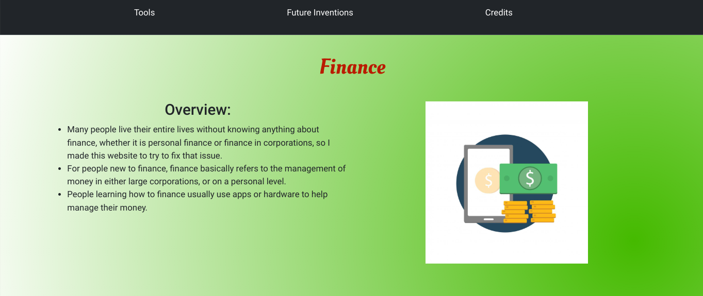

The "Freedom Project" for SEP10 is a year-long project all about making a website that informs the viewer of the current and future innovations in the topic of my choosing.
For my project, I chose the topic of Finance.
In order to make my website about making people more aware of how to manage their money, I used HTML, CSS, and Bootstrap. I also chose to independently study Jekyll.
A challenge that I had when making my Freedom Project was learning how to animate CSS gradients. This is the case because you can't animate them the traditional way– adding a normal animation simply doesn't work. Instead, you must set the gradient to transparent then you can add a animation:
body{
background-image: radial-gradient(circle at 90% 80%, transparent, white);
animation: back 4s infinite;
}
@keyframes back {
0%{background-color:darkgreen;}
33%{background-color:darkred;}
66%{background-color:darkblue;}
100%{background-color:darkgreen;}
}
Another challenge that I had when coding my Freedom Project was alignment. It was very difficult to align my accordions and internal links because the accordions often overlapped the text on the links, so I had to use media queries every 60px to constantly change the size of the accordions and the internal links.
A takeaway that I have is that before asking for help, you should search online for posts of the same question that you have. Chances are, you would be able to find a post with a solution to that very question, just like my question of animating CSS gradients.
Another takeaway that I have is that you shouldn't be afraid to try something new for the first time. Prior to coding my Freedom Project, I never actually learned how to use accordions; I originally wanted to use collapse, but I figured that it would look strange, considering the amount of text each accordion held.
If I had more time for my Freedom Project, I would try to perfect the alignment and change some colors.
 My Project